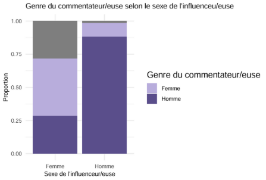
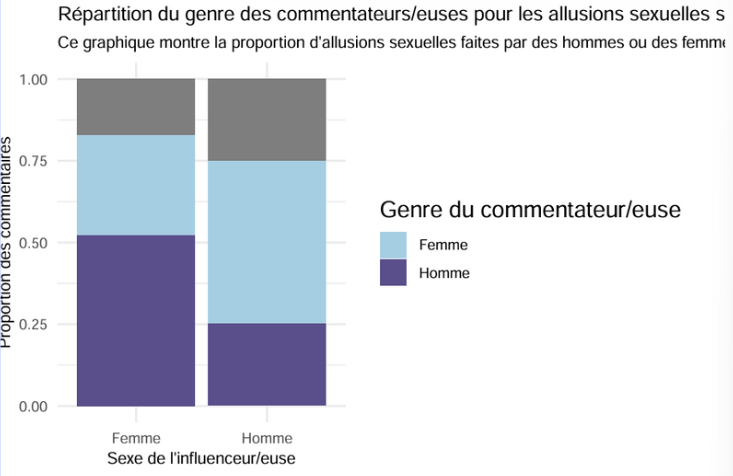
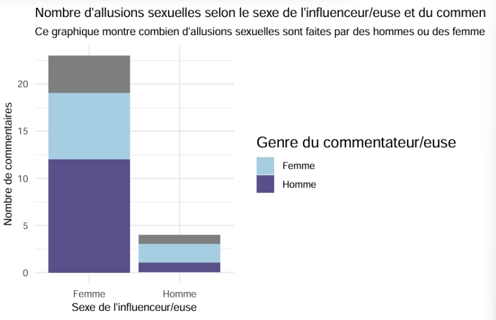
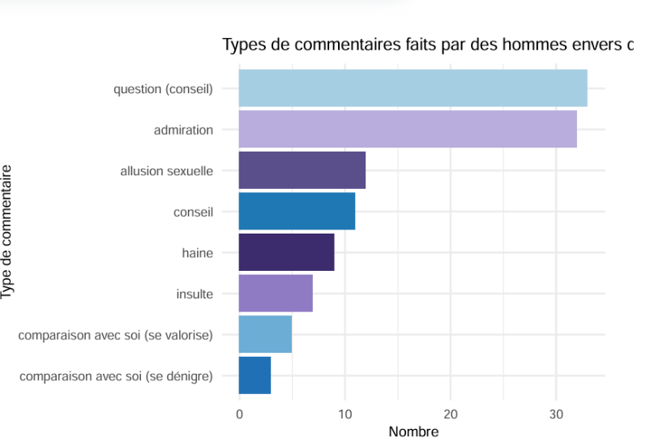
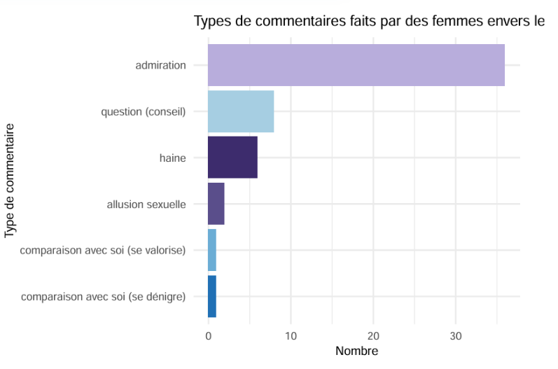
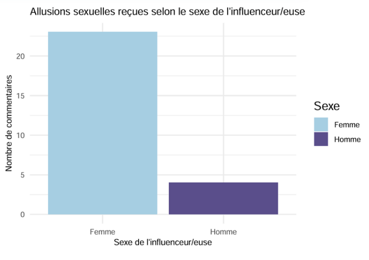
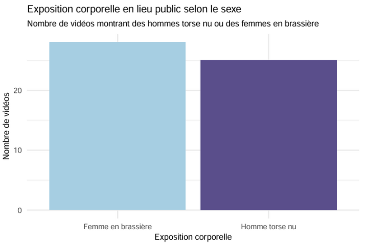
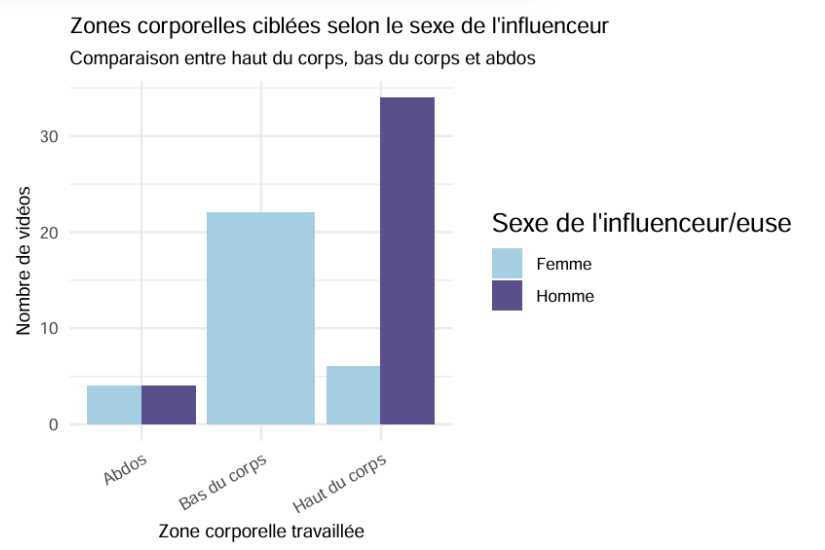

IV. Proposition de regroupement en parties
Partie 1 : Interactions et genre des commentateurs
Graphique 1 : Genre du commentateur selon le sexe de l’influenceur/euse (proportion).

Ce graphique met en évidence une asymétrie notable : environ 25 % des commentaires sur les vidéos des influenceuses proviennent d’hommes, tandis que les vidéos des influenceurs masculins ne reçoivent qu’environ 10 % de commentaires d’hommes. Cela suggère que les hommes s’expriment beaucoup plus sur les contenus féminins que les femmes sur les contenus masculins, ce qui peut refléter une dynamique genrée dans l’engagement.
Graphique 2 : Répartition du genre des commentateurs pour les allusions sexuelles selon le genre de l’influenceur/euse (proportion).

On observe ici que, proportionnellement, les hommes et les femmes font autant d’allusions sexuelles aux influenceurs qu’aux influenceuses (environ 50 % chacun). Ce résultat est intéressant car il nuance l’idée que la sexualisation serait exclusivement masculine, même si les volumes réels diffèrent.
Graphique 3 : Nombre d’allusions sexuelles selon le sexe de l’influenceur/euse et du commentateur (nombre de commentaires).

Ce graphique confirme que la majorité des allusions sexuelles proviennent du sexe opposé : les hommes ciblent principalement les femmes, et inversement. Cela illustre une logique de séduction ou d’objectification qui traverse les interactions.
Partie 2 : Nature des commentaires et sexualisation
Graphique 4 : Types de commentaires faits par des hommes envers des femmes (nombre).

Les commentaires masculins adressés aux influenceuses sont majoritairement des questions ou des marques d’admiration (plus de 60 occurrences). Cependant, les allusions sexuelles apparaissent en troisième position, avec une dizaine de commentaires, ce qui reste significatif.
Graphique 5 : Types de commentaires faits par des femmes envers des hommes (nombre).

Chez les femmes, la tendance est similaire : admiration et questions dominent, mais les allusions sexuelles sont beaucoup moins fréquentes (moins de 5 occurrences, en quatrième position).
Ainsi, les hommes font environ trois fois plus d’allusions sexuelles envers les femmes que les femmes envers les hommes, ce qui confirme une asymétrie dans la sexualisation.
Graphique 6 : Allusions sexuelles reçues selon le sexe de l’influenceur/euse (nombre).

En termes absolus, les influenceuses reçoivent cinq fois plus d’allusions sexuelles que les influenceurs. Ce chiffre met en lumière une différence nette dans la manière dont les contenus sont perçus et commentés.
Partie 3 : Mise en scène corporelle
Graphique 7 : Exposition corporelle en lieu public selon le sexe (nombre de vidéos).

Ce graphique montre que les hommes et les femmes exposent leur corps dans des lieux publics de manière relativement similaire pour créer leurs contenus. Cela suggère que la visibilité corporelle est une norme partagée dans le fitness sur TikTok.
Graphique 8 : Zones corporelles ciblées selon le sexe de l’influenceur/euse (nombre de vidéos).

On observe des différences dans la focalisation des exercices : les hommes mettent en avant le haut du corps (bras, pectoraux), tandis que les femmes se concentrent davantage sur les jambes et les fessiers. Ces choix traduisent des normes esthétiques différenciées selon le genre.